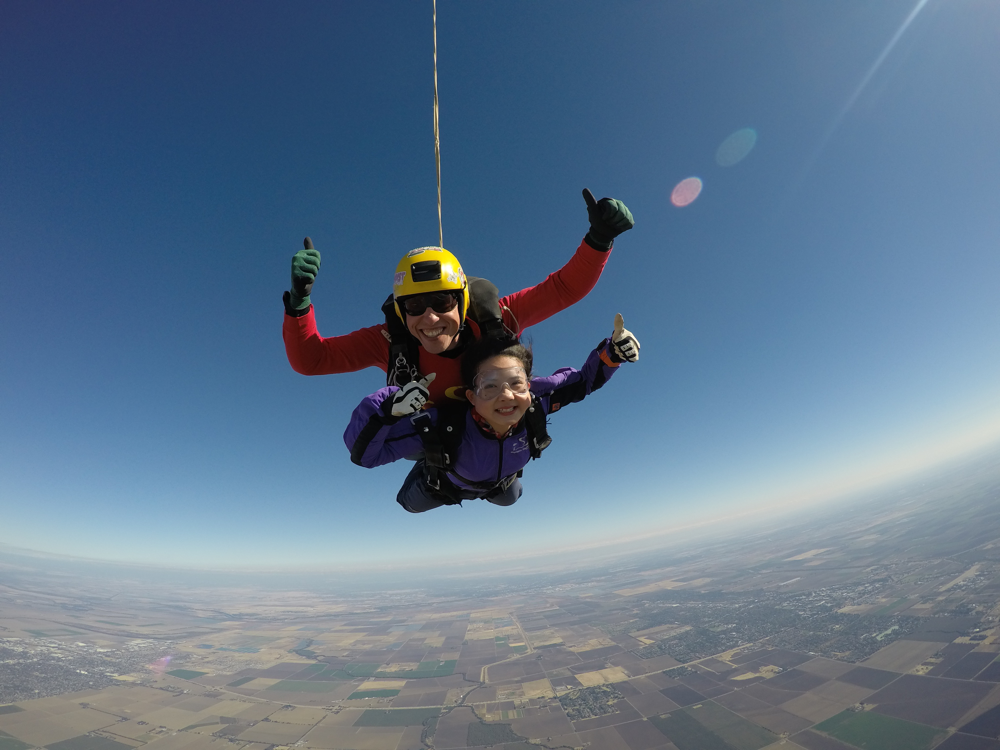
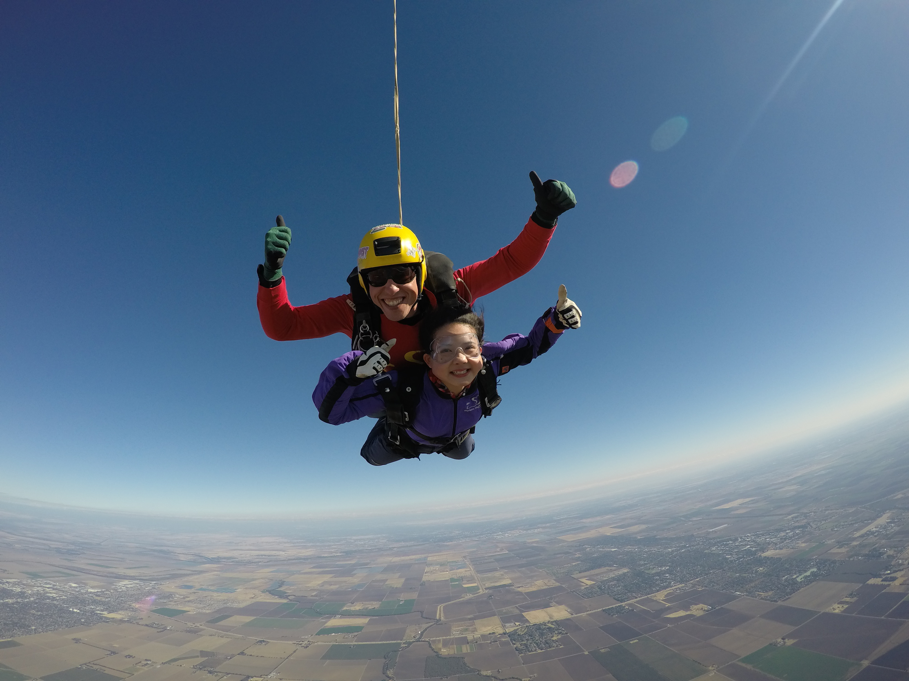

Education
I am a current freshman of University of California, Davis, majoring in Statistics.
I am taking classes of Statistics, Calculus, Computer Science, Economics and Intercultural leadership.
Expereinces
I am one of the global ambassadors of UC Davis Global Affair. I develop international campus by holding events related to different cultures, which students from 10+ countries take part in. I improve international culture leadership through holding events and connecting with international students.
I attended 2018 Undergraduate Leadership Conference (Leadership Amplified). I built skills of amplifying leadership through 4+ workshops presented by professionals. I networked with more than 25 student leaders on how to improve leadership.
Interests
I like travelling, and I have been to Canada, Japan, Korea, Singapore.
I like K-POP (Girls Generation).
I like watching F1 races.
I like wantching movies and reading books.
I like overcoming challenges.
 
